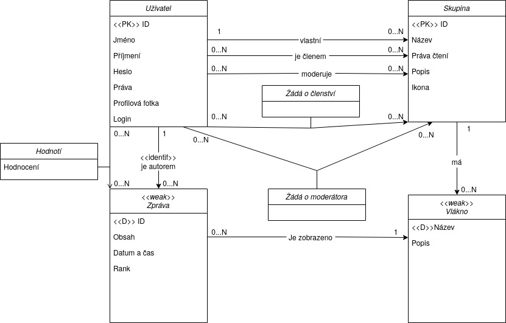

Sociální síť: diskuse v diskusních skupinách
- Autoři
- Vojtěch Ulej (vedúci)
xulejv00@stud.fit.vutbr.cz -
Databáza & funkcie pracujúce s databázou.
- Roman Fulla
xfulla00@stud.fit.vutbr.cz -
Aplikačná logika & backend
- Daniel Andraško
xandra05@stud.fit.vutbr.cz -
Dizajn stránky & frontend
- URL aplikace
- https://freechat.tech/
- https://manifest-life-296510.oa.r.appspot.com/
Uživatelé systému pro testování
Uveďte prosím existující zástupce všech rolí uživatelů.
| Login | Heslo | Role |
|---|
| Admin | nimdA12 | Administrátor |
| User | resu123 | Užívateľ |
| -- | -- | Návštevník ("prihlásenie" pomocou tlačidla) |
(Diagram případů užití není nutné vkládat, pokud IS implementuje role a případy užití definované zadáním.)
Implementace
V súbore freechat.py sa nachádzajú funkcie priradené k jednotlivým vstupným bodom, ktoré pokrývajú všetky implementované prípady užitia.
V db.py je implementovaná funkcia pripojenia ku databáze a trieda DB, ktorá obsahuje metódy pre prácu s databázou.
Súbor db.ini obsahuje informácie potrebné ku pripojeniu ku databáze. init.sql obsahuje samotnú implementáciu databázy.
Databáze

Instalace
Stručně popište:
- postup instalace na server:
- pip install -r requirements.txt
- FLASK_APP=freechat.py flask run # For debugging
- gunicorn -b :$PORT freechat:app # For production ($PORT určuje na který port se má aplikace navázat)
- softwarové požadavky :
- python 3.7.8 (minimální testovaná verze)
- python 3.8.6 (nejvyšší testovaná verze)
- balíčky uvedené v requirements.txt
- Při chybě instalace mysqlclient balíčku postupujte dle návodu na oficiální stránce
- jak rozbalit, konfigurovat, inicializovat databázi:
- Tato aplikace používá mysql jako databázový server
- Inicializační skript se nachází v sql/init.sql který je nutno spusti na serveru databáze
- Konfigurace připojení k databázy se nachází v souboru db.ini všechny uvedené údaje jsou povinné
- Pro připojení je nutné mít na serveru zapnuté ssl a nebo v souboru src/db.py ve funkci init_db z hodnoty app.config['SQLALCHEMY_DATABASE_URI'] odstraňte ?ssl=true
Známé problémy
Načtení nových zpráv probíhá jen při kliknutí na tlačítko load new posts, nebo obnovení stránky. Z časových důvodů jsme nestihli implementovat javascript funkci, která by periodicky přidávala nové zprávy (AJAX).
Zobrazuje se jen posleních 200 zpráv ve vláknu. Z časových důvodů jsme nestihli implementovat načítání starších zpráv.
V případě problému při testování:
Obnovte databázový server pomocí skriptu sql/init.sql. Informace pro připojení jsou v souboru db.ini
Při chybě internal server error zkuste akci provést znovu vícekrát.
Hodnotenie príspevkou, má v prvej iterácii z nezistených príčin, neočakávané chovanie.